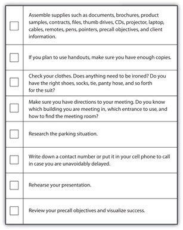
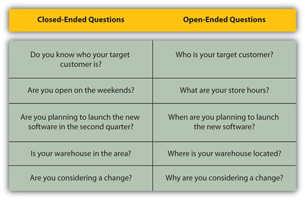
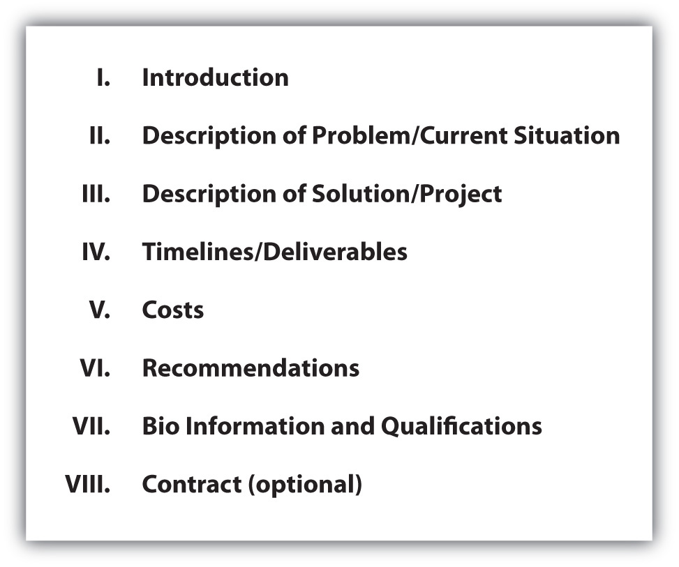

You met Paul Blake in Chapter 4 "Business Ethics: The Power of Doing the Right Thing" when he talked about ethics and doing the right thing. Now hear his tips for making a successful sales presentation. While most salespeople find this step of the selling process to be their favorite, it takes a lot more homework than meets the eye.
Listen to Paul’s advice for learning about what makes the customer tick and delivering value “in a big way.”
(click to see video)You’ve made it! After all your hard work you have reached the point in the selling process where the qualifying, researching, and planning stages pay off. Finally, your story and the customer’s story are about to connect in an exciting way. Most salespeople think of the presentation as the best part of the selling process. It’s the opportunity to show the prospect that you know your stuff—and the chance to deliver value by putting your problem solving skills to work. So get ready, visualize the best possible outcome to your sales presentation, and take the necessary steps to make this outcome a reality.
As excited as you might be about your product, or as eager as you are to demonstrate your solution, keep in mind that your sales presentation is primarily about building a relationship and beginning a partnership, especially in the business-to-business (B2B) arena. When Selena Lo, CEO of Ruckus Wireless, is gearing up for a sales presentation, she focuses her final preparations on making it personal. Lo’s company specializes in wireless routers that handle video, voice, and data capabilities for businesses. When she identifies a prospect, Lo’s first priority is finding the person she refers to as “the fox”: her ally in the prospect company who wants to see technological changes take place in his organization. Lo gives this relationship special attention, often inviting this individual out to dinner before the presentation to win his loyalty and get any additional details about his company.
Several days before the presentation, Lo researches everyone who will be in the meeting. She reads their bios and googles them to find out their employment histories. “You don’t want someone to think you checked out their entire past,” says Lo, but “you try to strike up more links between you and that person.” She prepares the seating arrangement for the sales meeting strategically, making sure that she will be sitting directly across from the highest-ranking person there so that she can make eye contact. On the day of the presentation, she asks a member of her sales team to write down each person’s name when they walk in the door—and to make a point of using the names during the presentation.Stephanie Clifford, “Find the Fox,” Inc., February 1, 2007, http://www.inc.com/magazine/20070201/features-sales-performance-lo.html (accessed May 16, 2010). Lo’s efforts to give the sales presentation a personal touch are a reminder that in relationship selling, you can never lose sight of the most important thing: your customer. Coach yourself on this on the day of your presentation and keep it in mind in the days leading up to it. What can you do to personalize this presentation and show your customers that it’s all about their organization?
Taking a customer-centric approach lies at the heart of delivering value. In these terms, value isn’t about offering a good price. It’s not just about solving the customer’s problems either. As Tom Reilly, author of Value-Added Selling: How to Sell More Profitably, Confidently, and Professionally by Competing on Value, Not Price, explains it, delivering value means that you “define value in customer terms, ask questions, listen to customers, and put the spotlight on customer-centric solutions.”Tom Reilly, Value-Added Selling: How to Sell More Profitably, Confidently, and Professionally by Competing on Value, Not Price, 2nd ed. (New York: McGraw-Hill, 2002), 23–24. This might mean that it takes more than one meeting to close your sale; you might need several visits to adequately respond to your customer’s needs. According to one study, “Today’s presentations typically are conducted over several meetings, with the salesperson often doing more listening than talking.”William C. Moncrief and Greg W. Marshall, “The Evolution of the Seven Steps of Selling,” Industrial Marketing Management 34, no. 1 (2005): 18. Make it your goal to see that you and your prospect get what you want out of the meeting.
It’s a good idea to visualize this outcome before going into the meeting. Review your precall objectives. What will it look like to achieve these objectives? What steps will you and your prospect have to take? How will it feel when you both have achieved your goals? This isn’t just about calming your nerves; visualizing the outcome you want is actually a powerful tool to help you achieve that outcome. For one thing, it’s another form of planning. If you mentally run through a “movie” of the sales presentation, allowing yourself to picture your reactions and the steps you will take to close in on your objective, you will be better prepared when the meeting takes place.Richard White, “Déjà Vu,” Pro Excellence, http://www.pro-excellence.com/html/resources.html (accessed May 16, 2010). Each step of the presentation will come naturally to you because you have already mentally rehearsed, and you will be better positioned to sell adaptively because you have already imagined a number of possible scenarios and customer responses.
For another thing, mental rehearsalRunning through a scenario (like your sales presentation) step-by-step in your mind before you go into the situation. fools your subconscious mind into believing you have already achieved your goals. Sales trainer and CEO Brian Tracy says, “Your subconscious mind cannot tell the difference between a real experience and one that you vividly imagine,” so if you imagine a successful presentation and its outcome several times before your actual presentation, you will be as calm and confident as if you had already closed the sale. You will smile more easily, you will speak more slowly and clearly, and you will command attention. In addition, if your subconscious mind believes you have already been in this situation before, it will direct you to say and do the things you need to achieve your objective.Brian Tracy, Advanced Selling Strategies (New York: Simon & Schuster, 1996), 80.
The sales presentation is where adaptive selling makes all the difference. Up until this point, you have researched and prepared and developed a solution that you think will meet your prospect’s needs, but walking into the presentation and delivering on that preparation requires a different set of skills. Among other things, it requires flexibility and the ability to think on your feet. The best salespeople adapt their presentations to their prospect’s reactions, and they go in knowing they may have to adapt to surprises for which they were unable to prepare (maybe the building has a power outage during the slideshow, for instance, or maybe one of the people from the customer organization decides to send another employee in his place at the last minute). These top-performing salespeople know that keeping a customer-centric focus, visualizing a successful outcome, and mentally rehearsing your presentation before you deliver it will give you the power to adapt with confidence and ease.
Adapting is all about listening. As Paul Blake noted in the video ride-along at the beginning of the chapter, your sales presentation is really a compilation of all the listening you have done to this point. And listening doesn’t stop there. It’s impossible to adapt if you’re not listening. When you are creating your presentation, keep in mind that it is not a one-way communication. Presentations are for listening, adapting, and solving problems.
Listen and Sell
(click to see video)This video highlights the power of listening and tips to listen effectively during your presentation.
There’s nothing worse than putting hours into preparing a killer sales presentation, only to blow your chances because you forgot to bring an important part of your demonstration or because you got lost on your way to the meeting. Don’t let disorganization hold you back: take charge of the details so that your only concern on the day of the presentation is the delivery.
The evening before your meeting, read over your precall objectives; practice your presentation a number of times out loud; and walk through your mental rehearsal, visualizing success. You can’t practice too many times. The content of your presentation should be second nature by the time you get up in front of your audience so that you can focus your energy on your prospect. Rehearsal is one of the best ways to calm your nerves so that you can focus on delivering your presentation naturally and connecting with your prospect.
Rehearse Your Way
Andres Mendes, global CIO of Special Olympics International, says that rehearsing out loud makes him too nervous; he likes to leave room for spontaneity and adaptation. Mendes develops the big themes of the presentation and maps these out into PowerPoint slides that tell the whole story. “I time the slides to move exactly at my pace, so I rehearse the mechanics and make sure those are right,” he says.Maryfran Johnson, “Rehearsing Success,” CIO Magazine, June 10, 2009, http://www.cio.com/article/494729/Why_Even_Successful_Speakers_Need_To_Practice (accessed May 16, 2010).
CIO Magazine columnist Martha Heller, on the other hand, likes to rehearse in the traditional style, delivering the presentation out loud and pacing the room as if she were in front of an audience. She never rehearses the opening though. She likes to adapt her comments to the immediate situation and energy in the room.Maryfran Johnson, “Rehearsing Success,” CIO Magazine, June 10, 2009, http://www.cio.com/article/494729/Why_Even_Successful_Speakers_Need_To_Practice (accessed May 16, 2010).
The bottom line? While nearly all top-performing salespeople rehearse, not all approach rehearsal in the same way. Find the style of rehearsal that works best for you. Additionally, don’t let your rehearsal lock you into delivering a rigidly defined set of remarks. You have to leave room for flexibility and adaptation.
The night before, you should also get together all the materials you’ll need for your presentation—handouts, files, product samples, and contracts—and have them ready to go for the following morning. This will save you time tracking down loose supplies at the last minute, when you’re trying to get out the door to make it to your meeting. It’s also a good idea to set out your clothes the night before for the same reason.
If you are planning to use multimedia equipment in your presentation, make sure in advance that your prospect will have everything you’ll need to make it run. If you aren’t sure, bring everything (e.g., cables, adapters, remotes) with you. And of course, make sure you know how to use all your equipment. When Keith Waldon, CEO of Earth Preserv, was preparing for a meeting with JCPenney, one of his biggest prospects, he spent hours rehearsing with his multimedia equipment. The technology was a key element of his presentation, and he wanted to make sure everything would work perfectly for the big day. “I had to learn how to use all the remote-control equipment,” he says. Waldon also brought a technical assistant with him as backup to safeguard against any glitches.Susan Greco, “Anatomy of a Launch: The Five-Hour Multimedia Sales Presentation,” Inc., October 1, 1995, http://www.inc.com/magazine/19951001/2441.html (accessed May 16, 2010).
It might surprise you to know how often salespeople show up late to their own presentations because they get lost on the way to the meeting. When you are traveling to an unfamiliar place for your appointment, get directions in advance, and allow extra travel time in case of traffic delays or wrong turns. Make sure you also research the parking situation beforehand. If your prospect is a large corporation with its own complex, are there reserved employee lots and visitor lots? Will you have to walk a considerable distance from your car to the meeting room? If you’ll be meeting in an urban area, is street parking available, or will you have to find a parking garage? You don’t want to arrive on time only to get delayed because you spent twenty minutes driving around in search of a parking spot. It’s a good idea to make a “test” trip in advance of your meeting. That will help avoid surprises with traffic, parking, security, or other areas that might cause a delay. If something unavoidable does come up to set you back, make sure you call ahead to let your customer know you will be arriving late.
Besides the extra time you allow for travel, plan to arrive at the meeting a little early. Not only does this convey professionalism, but it also gives you the time to mentally prepare once you arrive and to set up any equipment you’ll be using. It’s a good idea to allow time to stop in the restroom and take one last look to be sure you’re at your best (and it’s a good time to use a breath mint). Finally, bring something to read in case you have to wait: a business magazine, a newspaper like the Wall Street Journal, or maybe a Kindle.
Figure 10.1 Prepresentation Checklist
Your appearance communicates volumes about you before you ever open your mouth.
Tom Reilly tells the story of a salesperson that showed up to one of his recent seminars dressed in flip-flops and a T-shirt. “I thought he was there to clean the windows,” Reilly says.Tom Reilly, “Dress for Success,” Tom Reilly Training, 2009, http://www.tomreillytraining.com/Ezine%207-07%20DressforSuccess.htm (accessed May 16, 2010). You want your prospective customers to take you seriously at first glance, so pay careful attention to what you wear on your sales call. Think about it this way, when you are buying a product off the shelf in a store, isn’t packaging the first thing that catches your attention? Marketers know that packaging can influence a consumer’s decision to buy before she ever even researches the product or reads about its features. In the same way, your prospect will make a judgment about you based on the way you “package” yourself; a professionally dressed salesperson can have a huge influence on a prospect’s perception of him, his company, and the product he represents.“Dress for Success,” Sales Success Blog, November 29, 2006, http://salesuccess.blogspot.com/2006/11/dress-for-success.html (accessed May 16, 2010). Your appearance should convey professionalism, competence, and success. Most important, regardless of the dress code at your prospect’s business, be sure your appearance includes a smile. A smile is an instant rapport builder. No one wants to buy from someone who isn’t excited about the company or product he’s representing. Show your prospect that this isn’t just a job; it’s a passion.
When you are making a sales presentation at a company, remember the advice from Chapter 9 "The Approach: The Power of Connecting" and dress one step above what you would wear if you worked at the organization.Ross Macpherson, “6 Keys to Making the Right Impression in an Interview,” A Career in Sales, 2002, http://www.acareerinsales.com/careerToolsDress4Success.aspx (accessed May 16, 2010). If you are ever unsure about a company’s standard dress code, always dress up. It’s easier to take off a jacket and tie than to put them on at the last minute.Geoffrey James, “Is ‘Dress for Success’ Still Mandatory?” BNET, January 22, 2009, http://blogs.bnet.com/salesmachine/?p=732 (accessed May 16, 2010). However, if your prospect tells you the dress code beforehand, here are some general guidelines to follow.
For most of your business-to-business (B2B) sales situations, business attire will be the norm. For a while in the ’90s there was a trend toward more casual clothing in the workplace, but that trend is mostly on the way out. “I see a return to more traditional business wear,” says Gary Brody, president of the Marcraft Apparel Group.Paul Burnham Finney, “Redefining Business Casual,” New York Times, October 23, 2007, http://query.nytimes.com/gst/fullpage.html?res=9405EEDD1F39F930A15753C 1A9619C8B63&sec=&spon=&pagewanted=all (accessed May 16, 2010). For that matter, even if your customer says business casual is the standard in his workplace, if you are aiming to dress a notch up from that standard, you might decide that business attire is the way to go. As Mark-Evan Blackman of the Fashion Institute of Technology says, suits “universally project an air of authority.”Paul Burnham Finney, “Redefining Business Casual,” New York Times, October 23, 2007, http://query.nytimes.com/gst/fullpage.html?res=9405EEDD1F39F930A15753C 1A9619C8B63&sec=&spon=&pagewanted=all (accessed May 16, 2010).
For men, business attire means a suit (matching pants and jacket), a necktie, a long-sleeved shirt, and lace-up shoes.Andy Gilchrist, “Cracking the Dress Code,” Ask Andy about Clothes, http://www.askandyaboutclothes.com/Clothes%20Articles/cracking_the_dress_code.htm (accessed May 16, 2010). Go for conservative, dark colors such as gray, black, or dark blue for the suit; white or light blue for the shirt. For women, business means a suit (skirt or pants and matching jacket), shoes with moderate heels in a basic pump style (closed-toe), a blouse, and tan or light pantyhose.
Business casual can sometimes be tricky because it’s less clearly defined than business attire. According to Monster.com, business casual “means dressing professionally, looking relaxed, yet neat and pulled together.”Paul Burnham Finney, “Redefining Business Casual,” New York Times, October 23, 2007, http://query.nytimes.com/gst/fullpage.html?res=9405EEDD1F39F930A15753C 1A9619C8B63&sec=&spon=&pagewanted=all (accessed May 16, 2010). For men, a bare minimum approach to business casual means dress pants and a collared shirt. Women can wear skirts or pants, but skirts should be a conservative length, and pants should be well tailored: not too tight or too loose. On the top, a blouse or a tailored knit sweater are good choices, and for footwear, make sure to wear closed-toe shoes.Virginia Tech University Career Services, “Business Casual Attire,” Virginia Tech University, http://www.career.vt.edu/Jobsearc/BusCasual.htm (accessed May 16, 2010). Business casual for men or women does not include workout clothes or shoes, wrinkled clothing, worn blue jeans, shorts, miniskirts, athletic socks, or overly revealing clothing.Paul Burnham Finney, “Redefining Business Casual,” New York Times, October 23, 2007, http://query.nytimes.com/gst/fullpage.html?res=9405EEDD1F39F930A15753C 1A9619C8B63&sec=&spon=&pagewanted=all (accessed May 16, 2010).
Best-Dressed Men
(click to see video)This video provides tips for men to dress in business casual.
What Not to Wear
(click to see video)These videos include tips for what not to wear to work.
Getting the clothes right but missing the mark on the details will create a poor impression just as much as underdressing for the occasion can, so make sure everything from your nails to your hair and choice of accessories conveys professionalism.
And don’t forget good grooming. Body odor, bad breath, poorly manicured fingernails, and messy hair can be a deal breaker.
Dress to Impress
(click to see video)This video provides some good advice on how to dress for interviews and in the office.
When employees whose businesses rent space in the Coca-Cola building on New York’s Fifth Avenue want to bring a canned or bottled beverage to work, they have a list of drinks to choose from. Vermont Pure Water is OK, but Evian is definitely out. Food and drink orders coming into the building are scanned, and anything with non-Coca-Cola brand products gets sent away.BNET Advertising Industry, “Adds New Meaning to ‘Always Coca-Cola,’” BNET, http://findarticles.com/p/articles/mi_m0BDW/is_12_40/ai_54233838 (accessed May 16, 2010). While this rule is on the extreme side, it’s true that even the products you use reflect an image, and when you’re doing business with a potential customer, you want that image to be the right one. This is something worth researching before you go into your sales call. If you know who your prospect’s customers are, use those company’s products. Does the prospect do advertising for Apple? Don’t listen to your Zune while you’re waiting for the appointment. If your prospect is a publishing house, read some of their books before you go to your meeting. If they have a radio station or record label, listen to it. Knowing the prospect’s products, or their customers’ products, is part of your credibility.
When deciding on the structure of your presentation, there are a number of things to consider. Will you present to a group or to an individual? Where will you be giving your presentation? What tools will you use? Sometimes these options are under your control, but often in business-to-business (B2B) sales, you will have to adapt your presentation to your prospect’s needs. In either situation, you can maximize your presentation if you know what to avoid, what to prepare for, and how to make your solution come to life with the tools you have.
Elements of an Effective Presentation
(click to see video)“Effective Presentations,” featuring author Terri Sjodin, highlights how a great sales presentation comes together.
A good salesperson can read group dynamics as skillfully as she can read an individual prospect’s verbal and nonverbal cues and is comfortable in one-on-one and in group presentation situations. This is critical because as a salesperson sometimes you have control over the kind of presentation you will deliver (group versus individual), but in many situations, the size of the audience to which you will present is determined by the needs and structure of your prospect’s organization. In many organizations large purchasing decisions are the responsibility of purchasing committees or of a combination of individual and group decision makers.Gary M. Grikscheit, Harold C. Cash, and Clifford E. Young, The Handbook of Selling: Psychological, Managerial, and Marketing Dynamics, 2nd ed. (Hoboken, NJ: Wiley-Blackwell, 1993), 152. You might find that you begin with several individual presentations to decision makers in an organization and then are asked to give a follow-up group presentation to a purchasing committee.
In one-on-one presentations, of course, you only have one person’s needs, preferences, and background to research and adapt to, so customization is usually an easy task. You can closely observe your prospect’s nonverbal communication and listen to her stated needs and concerns and respond accordingly. Does he look worried when you tell him that your company’s integrated marketing plan usually takes four months to develop? You can explain that for preferred prospects you are sometimes able to turn around a faster solution. Does he seem distracted when you begin discussing product features? You can back off and begin asking more questions.
As you learned in Chapter 3 "The Power of Building Relationships: Putting Adaptive Selling to Work" in the discussion about social styles, you will be in a better position to deliver value during your sales presentation if you know something about your buyer’s personality before going into the meeting: Is your prospect conversational and people oriented, or is he task oriented and businesslike? Does your prospect care about details and thorough descriptions, or does he prefer to see the “big picture”? Is he competitive? How does he feel about change? Understanding these things about your prospect will help you to favorably position your product and plan your presentation so that you can put emphasis on the things that matter most to the individual. If you know your prospect is highly competitive, for instance, he will probably be interested in learning about the features that set your product apart from others on the market and the ways in which your product can give him or his company a competitive edge.
Writing up a customer trait description before your meeting can be very helpful so that you can use the information as a guideline in preparing your presentation.Gary M. Grikscheit, Harold C. Cash, and Clifford E. Young, The Handbook of Selling: Psychological, Managerial, and Marketing Dynamics, 2nd ed. (Hoboken, NJ: Wiley-Blackwell, 1993), 127. If you’re working with an existing customer or if you’ve interacted with your prospect prior to the presentation, you can use your observations to write a trait description. If you haven’t met the prospect before, try asking other salespeople in your organization, noncompetitive salespeople at other companies, or other contacts you have who might have met your prospect and who can tell you something about her personality.Gary M. Grikscheit, Harold C. Cash, and Clifford E. Young, The Handbook of Selling: Psychological, Managerial, and Marketing Dynamics, 2nd ed. (Hoboken, NJ: Wiley-Blackwell, 1993), 136. Also, use the company resources including the CRM system to gather as much information as possible about the company and your contact. In addition, it is also a good idea to send a precall questionnaire to your contact to gather information such as the names and titles of the people who will be attending the presentation, how much time has been allotted for you, objectives for the meeting, and any other information that will help you plan the meeting. This information can provide valuable information and help you create an agenda, which is a good idea to send to the prospect before the meeting.
In adapting to an individual buyer, it’s also important to consider his motivation.Gary M. Grikscheit, Harold C. Cash, and Clifford E. Young, The Handbook of Selling: Psychological, Managerial, and Marketing Dynamics, 2nd ed. (Hoboken, NJ: Wiley-Blackwell, 1993), 128. What are his responsibilities in the organization? What pressures does he face? Is he on a strict budget? Is he concerned with his status in the company? If you have two buyers who purchase the same product, chances are they’ll be doing it for different reasons:Gary M. Grikscheit, Harold C. Cash, and Clifford E. Young, The Handbook of Selling: Psychological, Managerial, and Marketing Dynamics, 2nd ed. (Hoboken, NJ: Wiley-Blackwell, 1993), 135. one person might buy a car from you because he sees it as a status symbol, while another person might buy the same car because it gets good gas mileage and is well built and reliable. Keep in mind that delivering value isn’t only about meeting a prospect’s needs; it’s also about showing him that you understand his specific motivations and concerns. The best salespeople present themselves as advisors their customers can trust.Ian Brodie, “Becoming a Trusted Advisor,” Ian Brodie: Business Growth for Professional Service Firms, blog post, July 5, 2008, http://www.ianbrodie.com/blog/becoming-trusted-advisor (accessed May 16, 2010). Is a prospect worried about proving herself in a new role in her company? Show him how your product can help him perform her role better, or demonstrate how people in similar positions at other companies have used your product with success.
Sell with Success Stories
(click to see video)Listen to how Rachel Gordon, account manager at WMGK, uses success stories with other customers as a selling tool in her presentations to new prospects.
If customization is that straightforward with an individual buyer, why would you ever choose to sell to a group? Besides the fact that sometimes the nature of the sale demands it, selling to groups is also more efficient than selling to individuals. If you’re selling accounting software to a number of departments in an organization, rather than meeting individually with a decision maker from each department, you can save time by giving your sales presentation to a number of decision makers at once. Group presentations can also help you identify the decision makers in an organization if you aren’t yet sure who they are. By keeping an eye on group dynamics during the presentation you can usually observe the “pecking order” among members and identify the individuals in the group whose opinions hold the most leverage.
Additionally, group presentations can be a way to win greater support for your sale. If you know one or two people in an organization who are excited about your product, you can allow their enthusiasm to influence others in a group setting.Gary M. Grikscheit, Harold C. Cash, and Clifford E. Young, The Handbook of Selling: Psychological, Managerial, and Marketing Dynamics, 2nd ed. (Hoboken, NJ: Wiley-Blackwell, 1993), 165. Recall Selena Lo of Ruckus Wireless, who finds the “fox” within each of her target organizations and leverages his support of her product to sway the group buying decision.
If you know what is at stake for each member of the group, you will be able to facilitate the discussion during your presentation much more effectively. This is why it’s important to gather information about everyone who will attend your sales meeting. Again, think of Lo’s method, where she reads each group member’s bio and googles their names before going into a group meeting. Find out the individual’s needs within the organization. What is her status? How does she perceive the urgency of the problem you want to solve? Does she have any ego involvement in the product or service?Barton A. Weitz, Stephen Byron Castleberry, and John F. Tanner, Selling: Building Partnerships, 5th ed. (New York: McGraw-Hill, 2003), 264. (For instance, an accountant in the organization might feel threatened by new accounting software if it replaces part of her current role.) This will help you understand the most important concerns you will need to address in the presentation, and if certain parts of your presentation apply more directly to certain members of the group, you can direct those parts specifically at those individuals.
Keep in mind that people act differently in group settings than they do when you are interacting with them alone, so finding out about individual members’ personalities is less important in group presentations. Instead, adjust your presentation to the dynamics in the room. Watch the group for nonverbal cues; when one member is talking, observe how others react to see whether or not they support what she’s saying.Barton A. Weitz, Stephen Byron Castleberry, and John F. Tanner, Selling: Building Partnerships, 5th ed. (New York: McGraw-Hill, 2003), 265. If the energy in the room feels low, or if you get the sense that the group is getting restless, consider moving on to the next part of your presentation or changing tactics.
Sometimes you won’t know who or how many people you will be presenting to beforehand, so you won’t be able to research the individuals. However, it’s always a good idea to ask when you call to schedule your meeting. You may be able to find out information that your contact at the organization wouldn’t otherwise volunteer.
Group Presentations
(click to see video)Hear about how to use a group presentation to your “unfair” advantage in this video:
You also might not know where your presentation will happen. If you know you’ll be presenting to your prospect at his office or in a conference room at his company, you won’t have control over the environment. What happens if your prospect has reserved a meeting room and when you arrive there are no empty walls on which you can project the PowerPoint presentation you brought along? When you know you’ll be presenting in an unfamiliar environment, make sure to have a contingency plan in place. If slides or other multimedia equipment are central to your presentation, talk to someone at the company to make sure you’ll be able to use the equipment. And if this fails, be ready to rely on your handouts, product samples, or the good old whiteboard to carry the presentation through.
Of course, in other situations, you will have control over the environment. In real estate, for instance, the presentation takes place inside the product. In retail, the presentation generally happens at your store. And there are other selling situations in which the prospect will come to your office or a conference room at your company or where you will meet at a “neutral” location like a rented meeting space.John Chapin, “Sales Presentations—How Location Can Affect Your Presentation and What to Do,” CompleteSelling.com, blog post, March 14, 2008, http://www.completeselling.com/members/completeselling/blog/VIEW/00000009/00000076/Sales-Presentations---How-Location-can-affect-Your-Sales-Presentation- and-What-to-Do.html (accessed May 16, 2010). Here are a few guidelines to follow, depending on the environment in which you’ll be presenting.
When the prospect comes to you, treat her like you would treat a guest in your home. Make sure you set up any presentation materials well in advance and have refreshments set out in the conference room or your office. Think about ways you can add personal touches—for instance, a sign with the prospect’s name on it (“[Your company name] welcomes [prospect’s company name]”), or, for a group presentation, information packets at each person’s seat with his or her name on the front. Sales professional John Chapin suggests having small items on hand that you can give to your prospect, such as pens or calculators with your company logo on them.John Chapin, “Sales Presentations—How Location Can Affect Your Presentation and What to Do,” CompleteSelling.com, blog post, March 14, 2008, http://www.completeselling.com/members/completeselling/blog/VIEW/00000009/00000076/Sales-Presentations---How-Location-can-affect-Your-Sales-Presentation- and-What-to-Do.html (accessed May 16, 2010). Small, thoughtful details can make an important difference.
If you are giving your presentation in a neutral location like a rented conference room you have the freedom to set up and work out any technical bugs well beforehand. When Keith Waldon of Earth Preserv was preparing for the presentation that secured his biggest customer, JCPenney, he rented a boardroom in a building near JCPenney’s corporate headquarters. He opted for the rented space so that he could pull out all the stops for the presentation. “I wanted to catch JCPenney by surprise,” Waldon says.
When the five executives arrived, Waldon had set up multimedia equipment for video, sound, and slides. He had placed a thick binder of presentation materials (including television storyboards, magazine advertisements, and product comparisons) at each executive’s seat with his name and the JCPenney corporate logo embossed on the front. Besides the conference room, Waldon had also rented an empty storefront in the same building, and halfway through the presentation, he took his customers to see the retail window display he had created there to look like one JCPenney might use to display Earth Preserv products in their stores.Susan Greco, “Anatomy of a Launch: The Five-Hour Multimedia Sales Presentation,” Inc., October 1, 1995, http://www.inc.com/magazine/19951001/2441.html (accessed May 16, 2010).
Since you will have time to set up beforehand at a rented location, you can treat the presentation the way you would treat a presentation at your home office. Bring refreshments, set up any multimedia equipment well in advance, and arrive early to make sure everything is in working order at the facility. Make sure you know the name of the facility’s contact person; you can call her several days ahead of time to find out what equipment she has at on hand and what you will need to bring.John Chapin, “Sales Presentations—How Location Can Affect Your Presentation and What to Do,” CompleteSelling.com, blog post, March 14, 2008, http://www.completeselling.com/members/completeselling/blog/VIEW/00000009/00000076/Sales-Presentations---How-Location-can-affect-Your-Sales-Presentation- and-What-to-Do.html (accessed May 16, 2010).
When you deliver your presentation at your prospect’s location, you won’t have the luxury of extensive setup time, and you may find that you have to adapt to the space and resources on hand. However, there are a few things you can do to make a good impression and ensure that things go as smoothly as possible:
So how do you give a sales presentation if your prospect lives across the country, but you have a limited budget for travel? Unless there is a good chance that a prospect will become a key customer, it usually isn’t practical for a salesperson to travel long distances to make one presentation. However, thanks to improved technology, it’s becoming increasingly common for salespeople to address this problem using Webinars, video conferences, and online meetings. These technologies are allowing companies to reach more prospects in less time and to reach prospects internationally and across long distances.
Remote Presentations
Learn more about how and why salespeople are now using the Web to make sales presentations.
Of course, there are some drawbacks to giving sales presentations through video conferencing rather than in person. For one thing, it’s always easier to establish rapport with your prospect if you’re able to have a face-to-face interaction. Video conferences offer the benefit of visuals, so you and your prospect can read one another’s body language and visual cues, but this is not a complete substitute for sitting in the same room with someone. Additionally, since the presentation relies entirely on technology—both on your end and on the prospect’s end—there is a greater chance that a technological malfunction could prevent the presentation from working.
In-person presentations are still the most effective and personal method, so whenever you are able (and when it is practical) to give a face-to-face presentation, this is your best option. However, technology keeps improving, and online meetings and video teleconferences are becoming more successful as an alternative method all the time.“Sales Trends: Electronic Sales Presentations,” KnowThis.com, http://www.knowthis.com/principles-of-marketing-tutorials/personal-selling/selling-trends-electronic-sales-presentations (accessed May 16, 2010). Depending on your selling situation, this is something you might consider. As online sales strategist Joanna Lees Castro points out, video conferencing can be almost as effective as an in-person meeting in a number of selling situations, and it is certainly a better, more personal approach than e-mail or telephone.Joanna Lees Castro, “Using Video Conferencing to Host an Effective Online Sales Presentation—6 Best Practice Tips,” EzineArticles, http://ezinearticles.com/?id=1316495 (accessed May 16, 2010).
Even though video conferencing feels different from in-person communications, you should essentially treat your online meetings the way you would treat any sales call. Keep in mind that nonverbal communication has a strong influence on interactions—and, especially with good technology, your customer can see you clearly. Pay attention to your body language and facial expressions, and avoid personal gestures (like playing with your hair or scratching an itch).“Video Conferencing Etiquette Checklist,” Manage Smarter, June 8, 2009, http://www.presentations.com/msg/content_display/training/e3i0fe06f39ca140432cc75be4595e2c6e1 (accessed May 16, 2010). Dress professionally, plan your agenda carefully, and make sure to prepare and get your materials set up ahead of time. If you are conferencing from a location other than your office, arrive early to make sure the technology is set up to run smoothly for your presentation.
It is also important to resist the temptation to multitask during your video conference. Close down any other applications you might have open on your computer, clear off your desk, and make sure you will not be interrupted until the call is over. Mute any cell phones and close the door to the room in which you are presenting. Give your customer your full attention. While this level of focus is a given on your end, unfortunately, you can’t always be certain that your prospect will give a video conference meeting his full attention by minimizing distractions. For this reason, it is especially important to have a clear agenda that you follow closely. Keep your presentation brief, and be aware that you will have to work harder to hold your prospect’s attention. Live interaction from your audience is critical to make sure your participants are engaged.
Besides a greater likelihood of distraction, there are a few other extra considerations to keep in mind in a video conference situation. Sales and Management magazine notes that privacy is expected during a video conference, so if you want to record part of your presentation, it is important to ask your prospect for permission.“Video Conferencing Etiquette Checklist,” Manage Smarter, June 8, 2009, http://www.presentations.com/msg/content_display/training/e3i0fe06f39ca140432cc75be4595e2c6e1 (accessed May 16, 2010). When the presentation is over, Joanna Lees Castro suggests closing the meeting with a clear call to action in which you include a wrap-up and well-defined next steps that you and your prospects should take. At the end of a conventional sales presentation, Lees Castro points out, next-step discussions can happen more organically, as the customer is walking you to the door, but this is obviously impossible in an online situation.Joanna Lees Castro, “Using Video Conferencing to Host an Effective Online Sales Presentation—6 Best Practice Tips,” EzineArticles, http://ezinearticles.com/?id=1316495 (accessed May 16, 2010).
In the best sales presentations, the product or service comes alive. Try to see the presentation through your prospect’s eyes. What is the best way to capture his imagination? How will you tell the story that will make your product or service compelling? In what ways can you delight or surprise your customer? Few people know how to do this better than Dann Ilicic, CEO of Wow Branding. Wow, a small start-up, frequently outperforms big name competitors when vying for a prospect. Ilicic approaches each presentation with the same mind-set: you can’t bore your customer into buying from you, so why not dazzle them? One customer said the presentation Ilicic put together for his company couldn’t have been better: “Dann unquestionably knocked it out of the park compared with the other firms, and they were really high-end firms with spectacular portfolios.”Stephanie Clifford, “Fasten Your Seatbelts,” Inc., February 1, 2007, http://www.inc.com/magazine/20070201/features-sales-performance-ilicic.html (accessed May 16, 2010).
So how does Wow Branding wow its prospects? Ilicic’s approach offers three lessons:
So what techniques can you use to achieve these goals in your sales presentations? The tools you choose will depend on the situation and your presentation style. As Ilicic demonstrates, the possibilities are almost endless, but whatever tool you use, it is important to carefully consider your choice and how you can maximize its effectiveness.
PowerPoint slides provide an easy way to organize your presentation and add helpful visuals. For many salespeople, PowerPoint is one of their go-to presentation tools. It can be an especially helpful tool for salespeople who are starting out and want the security of a clear framework from which to present. An added benefit is that it doesn’t take much technological know-how to put together a clean-looking PowerPoint demonstration.
On the other hand, not all presentation situations lend themselves to PowerPoint (e.g., conference rooms with no wall space on which to project or presentations given in the field), so if you plan to use this tool, make sure that you will be presenting in a space where you can make it work. Additionally, be aware of—and avoid—a number of common mistakes salespeople make when using PowerPoint that can ruin a presentation. As sales coach and author Anne Miller says, “Putting PowerPoint into the hands of some sales reps is like putting matches into the hands of some children.”Anne Miller, “Death by PowerPoint,” Sales and Sales Management Blog, February 22, 2008, http://salesandmanagementblog.com/2008/02/22/guest-article-death-by-powerpoint-by-anne-miller (accessed May 16, 2010). To maximize PowerPoint as a tool to successfully sell your story, use the tips in Figure 10.5 "Guidelines for PowerPoint Visuals".Anne Miller, “Death by PowerPoint,” Sales and Sales Management Blog, February 22, 2008, http://salesandmanagementblog.com/2008/02/22/guest-article-death-by-powerpoint-by-anne-miller (accessed May 16, 2010).
Figure 10.5 Guidelines for PowerPoint Visuals

The following dos and don’ts can also be helpful as you are creating a PowerPoint presentation.
10/20/30 Rule
(click to see video)Guy Kawaski, best-selling author, venture capitalist, and entrepreneur, created this rule and describes it in this video.
It is usually expected that you will have printed material to give your audience during a presentation. In addition to a printed supplement to your PowerPoint presentation (i.e., something that conveys the same information as your slides and on which your audience can take notes), you might decide to bring along brochures with information about your company, products, and services. What are the benefits of brochures? According to sales expert and author Geoffrey James, in some situations you need a brochure to make your firm look serious. However, James lists “I promise to read your brochure” as one of the top ten lies customers tell sales reps. His conclusion: the brochure might gain you credibility, but it probably won’t get read.Geoffrey James, “Top 10 Lies Customers Tell Sales Reps,” BNET, April 23, 2009, http://blogs.bnet.com/salesmachine/?p=2323&page=2 (accessed May 16, 2010). Don’t rely completely on brochures because they won’t be a focal point of your presentation.
Sometimes a brochure can work as a reminder about you and your company after you’ve left, but this is assuming your customer doesn’t throw the brochure away. When it comes to reminders, a better bet is leaving something functional that your customer will actually use regularly. These reminder objects—calendars, refrigerator magnets, pens, or mouse pads labeled with your company name—are called premium leave-behinds and are a proven method of reminding customers you exist.Brad Sugars, “Building Repeat Business from Day 1,” Entrepreneur, May 22, 2007, http://www.entrepreneur.com/startingabusiness/startupbasics/startupbasicscolumnistbradsugars/article178724.html (accessed May 16, 2010). Almost all salespeople bring some sort of brochure or premium leave-behind on their sales calls.
There is almost no better way to make your story come to life for your customer than letting him experience it for himself. Think of television courtroom dramas: when the lawyer is making her final statement to the jury and she wants to pull out all the stops, what does she do? She doesn’t just give the jury the facts or tell them the version of the story she wants them to believe—she brings the story to life; she puts the gun in the defendant’s hand; she brings out the pictures of the stab wounds. Think about this when you plan your sales presentation. During the presentation, you can bring your story to life by offering product samples for your prospects to try or by running demonstrations that let them see for themselves what your product can do. When winemakers sell their products to large distributors, they don’t just bring in descriptions of their wines for the buyers to read; they offer tastings so buyers can experience the product. When caterers want to sell their services to someone who is planning a wedding, they bring in samples from their menus, so the customer can say, “Wow this pasta really is delicious!” Or think of Keith Waldon of Earth Preserv who didn’t just tell JCPenney, “We can make displays of our environmentally friendly products for your store windows;” instead, he set up a real shop window display so his prospects could see their place in his story.
Sell to Someone Unexpected
For the founders of Cranium, Inc., maker of the popular Cranium board game, playing is believing. When the company first launched in 1998, they knew that 50 percent of board games failed in their first year. Cranium’s strategy? Avoid the traditional board game buyers—toy stores—and sell to someone unexpected. Cranium’s founders managed to get an introduction to Howard Schultz, CEO of Starbucks, and they arrived at his office with a game board and challenged him to a match. After playing a few rounds, Schultz decided this was just the game Starbucks had been looking for—something that would support coffeehouse culture—and Cranium, Inc., had its first major sale.
Next on Cranium’s list? Barnes & Noble Booksellers. The company’s founders scheduled a meeting with Terese Profaci, the bookstore’s director of gift merchandising, whose boss told the sales reps on the way in, “I don’t know why you’re here. We don’t sell games.” Still, Profaci’s boss had her play a round of the game with some employees at corporate headquarters, and in the end, Barnes & Noble was won over.Julie Blick, “Inside the Smartest Little Company in America,” Inc., January 1, 2002, http://www.inc.com/magazine/20020101/23798.html (accessed May 16, 2010).
Besides bringing your story to life, there are a number of other good reasons to use demonstrations:
When you present your solution to the customer, especially in B2B sales, closing the sale usually depends on whether the cost of your solution is offset by the value it delivers.Gerald L. Manning and Barry L. Reece, Selling Today: Creating Customer Value, 9th ed. (Upper Saddle River, NJ: Prentice Hall, 2004), 256. If you can quantify your solution using cost-benefit analysis and ROI (return on investment) analysis, you can help your customer determine whether a project or purchase is worth funding.
A cost-benefit analysisQuantifies the costs of a purchase in relationship to the benefits it provides. asks the question “Will this purchase save more money in the long run than it costs?”David H. Miles, The 30 Second Encyclopedia of Learning and Performance (New York: AMACOM, 2003), 139–40. Imagine you are selling an energy-efficient commercial dishwasher to a pizza kitchen. The dishwasher costs $3,000, but average cost savings per year are $800 in energy bills and $200 in water usage: a total of $1,000.Energy Star, “Commercial Dishwashers for Consumers,” U.S. Environmental Protection Agency and U.S. Department of Energy, http://www.energystar.gov/index.cfm?c=comm_dishwashers.pr_comm_dishwashers (accessed May 16, 2010). Your dishwashers are guaranteed to last a long time; in fact, you offer a five-year warranty on any purchase. At a savings rate of $1,000 each year, your customer will have saved $5,000 in energy and water expenses by the time his warranty expires. Based on this information, you present this cost-benefit analysis to your prospect:
$3,000 = cost (initial investment) cost savings – initial investment = benefit $5,000 – $3,000 = $2,000In this case, the cost savings is $1,000 per year times five years for a total of $5,000, minus the initial investment of $3,000, means that there is a benefit of $2,000.
In other words, the dishwasher has a three-to-two cost-benefit ratio over five years ($3,000 in cost to $2,000 in benefit). You can tell him, “This purchase will save you money in the long run. After you make back what you spent on the dishwasher in cost savings, you will continue to save $1,000 each year.” Similarly, you can show your customer a return on investment (ROI) analysisShows the return (profit or cost savings) as a percentage of the initial investment.. ROI shows the customer the return (profit or cost savings) compared to the investment he will make. In the case of the dishwasher, the ROI would be calculated by dividing the benefit (in this case $2,000) by the cost of the product or initial investment (in this case $3,000), then multiplying the result by 100, which would yield a 66 percent ROI after five years.
$2000 (savings over five years) ÷ $3,000 (initial investment) × 100 = 66% ROIYou can maximize ROI by cutting costs, increasing profits, or accelerating the rate at which profits are made.“Cost of Ownership, ROI, and Cost/Benefit Analysis: What’s the Difference?” Solution Matrix, http://www.solutionmatrix.com/tco-roi-cba-difference.html (accessed May 16, 2010). Some businesses have a minimum ROI that must be met before a purchase can be approved. While you might be able to learn this information in your preapproach, it is more likely that you will have to discuss minimum ROI with your customer during the sales presentation. You might present your solution and find out more about your customer’s specific needs (including budget constraints and minimum ROI) during the first sales presentation and then write up a proposal in response to your findings, which you deliver during a second presentation.
In 1988, Neil Rackham and his company Huthwaite, Inc., researched more than 35,000 sales calls, observing successful and experienced sales professionals doing what they do best. In the process they disproved a number of popular myths about the selling process, and they developed a sales model of their own, which they called SPIN selling.Neil Rackham, The SPIN Selling Fieldbook (New York: McGraw-Hill, 1996), 8; Greg Woodley, “SPIN Selling Is Good,” SellingandPersuasionTechniques.com, http://www.sellingandpersuasiontechniques.com/SPIN-selling.html (accessed May 16, 2010). Today sales professionals around the world incorporate the SPIN selling model into their sales process with great success—and if you learn a few simple principles, you can too. The following section describes SPIN selling in a nutshell.
SPINA customer centered sales model. SPIN stands for the four kinds of questions successful salespeople ask their customers: Situation, Problem, Implication, and Need-payoff. works from the theory that relationship selling is customer-centric. It requires you to adapt your selling process to your customer, and it delivers personal solutions. To make this work, you have to ask your buyer a lot of questions, let him do most of the talking, and give his responses your full attention.
In the SPIN model, there are four components of a sales call: opening, investigating, demonstrating capability, and obtaining commitment. SPIN gets its name from the four kinds of questions that take place during the investigation stage: Situation, Problem, Implication, and Need-payoff.
With smaller sales, these four components of the sale (opening, investigating, demonstrating capability, and obtaining commitment) often happen sequentially and in a short period of time; a customer might walk onto your car lot and commit to buying a car from you an hour later. But often in business-to-business (B2B) sales, especially complex ones, you will incorporate SPIN components into a number of the steps in your selling process. For instance, you will do some investigation during your preapproach, and you might make an early presentation in which you open, investigate, and demonstrate capability. Because larger sales take more time, you won’t close the sale at the end of your first presentation, but you might get a commitment from your customer to move the sale forward. SPIN selling is not a rigid, step-by-step model; rather it provides an effective, flexible framework for customer centered selling.Neil Rackham, SPIN Selling Fieldbook (New York: McGraw-Hill, 1996), 38.
According to Rackham, the openingThe first step in SPIN selling that paves the way for the rest of the sales call. of the sales call is not the most important part, but it does pave the way for the important steps that come after.Neil Rackham, SPIN Selling Fieldbook (New York: McGraw-Hill, 1996), 139. At the beginning of every call, you want to set the preliminaries and make any necessary introductions. (In larger B2B sales, you usually won’t spend very long on introductions because 95 percent of the time you will be meeting with an existing customer or a prospect you have already met.)Neil Rackham, SPIN Selling Fieldbook (New York: McGraw-Hill, 1996), 40. If you are following up on an earlier sales call, it’s important to recap the conclusions of your last discussion: “The last time we spoke, we talked about pricing and setting a timeline, and you agreed that you would like to move the sale forward if we could put together a proposal that matched your budget and would meet your deadlines.” Then, most important, you want to begin the conversation by getting your customer’s agreement to let you ask him some questions.Neil Rackham, SPIN Selling Fieldbook (New York: McGraw-Hill, 1996), 144. This builds rapport and establishes a buyer centered purpose for your call.“SPIN Selling,” review of SPIN Selling, ChangingMinds.org, http://changingminds.org/books/book_reviews/spin.htm (accessed May 16, 2010).
InvestigationThe second and most critical step of SPIN selling that involves asking questions to uncover your buyer’s needs.—asking questions to uncover your buyer’s needs—is at the heart of SPIN selling. This is the stage during which you ask the types of questions that give SPIN its name: situation, problem, implication, and need-payoff. Here’s how each of these types of questions works during the sales presentation.
Situation questionsIn SPIN selling, situation questions deal with facts about the buyer’s existing situation. deal with the straightforward facts about the buyer’s existing situation and provide a starting place for understanding your buyer’s needs.Greg Woodley, “SPIN Selling Is Good,” SellingandPersuasionTechniques.com, http://www.sellingandpersuasiontechniques.com/SPIN-selling.html (accessed May 16, 2010). If you ask too many situation questions, you risk boring your prospect and damaging your credibility, so ask situation questions sparingly. If you do careful research before your sales call, you should find out most of the basic information about your customer’s current situation before your meeting so that the situation questions you ask are only the ones that will provide information you aren’t able to track down elsewhere.Neil Rackham, SPIN Selling Fieldbook (New York: McGraw-Hill, 1996), 76; Eric Wolfram, “How to Sell—SPIN Selling,” Wolfram, http://wolfram.org/writing/howto/sell/spin_selling.html (accessed May 16, 2010). For instance, if you are selling Internet connectivity, you might ask your buyer, “Which of your offices are currently using DSL?”
| Customer: | Our four branch campuses use DSL, but our main offices downtown use a cable service. |
| You: | Oh, they use cable? Who is their provider? |
| Customer: | Ajax Communications. We’ve been with them for about two years. |
| You: | I understand Ajax sometimes offers their service on a contract basis. Do you currently have a contract with Ajax? |
| Customer: | We had a contract, but that ended a couple of months ago. |
You already know that your prospect will only be motivated to buy if she recognizes she has a need. Asking problem questionsIn SPIN selling, problem questions help uncover your prospect’s need. helps customers understand their needs, and ultimately it paves the way for you to propose a solution that seems beneficial to your customer.Neil Rackham, SPIN Selling Fieldbook (New York: McGraw-Hill, 1996), 90. Problem questions are the most effective in small sales: “Was limited storage space ever an issue with your last computer? How much has the size and weight of your current laptop affected your ability to carry it with you?” But in B2B sales it is still important to ask a few problem questions so that you and your buyer share an understanding of the problem or need.Neil Rackham, SPIN Selling Fieldbook (New York: McGraw-Hill, 1996), 93. Sometimes it is tempting to jump right into presenting the benefits of your solution, but keep in mind that your prospect might not always see his problem right away, even if it is already evident to you.“SPIN Selling,” review of SPIN Selling, Changing Minds Book Reviews, http://changingminds.org/books/book_reviews/spin.htm (accessed May 16, 2010). Imagine you sell tractors. To understand the difficulties your prospect faces with his current machines, you could ask problem questions like “How much does it cost to maintain your current farm machinery?” “How often do your tractors break down?” and “Who is usually responsible for doing the maintenance work?”
In larger sales, implication questionsQuestions that help uncover the consequences or effects of a prospect’s recognized problems. are closely linked to success because they increase a prospect’s motivation to seek change. Implication questions uncover the effects or consequences of a prospect’s problems. These questions are especially effective when your prospect is a decision maker whose success depends on understanding the underlying causes of a problem and its potential long-term consequences.Neil Rackham, SPIN Selling Fieldbook (New York: McGraw-Hill, 1996), 108. Say, for instance, your prospect has offices in five locations, but he only has IT staff at two of the locations. To help him understand the implications of this problem, you might ask questions like this:
| You: | If a computer crashes at one of your branch offices, who takes care of the problem? |
| Prospect: | That depends. Our Bellevue and Redmond offices have their own IT people, but when we have a problem downtown or in North Seattle, we call someone from the east side offices to come fix it. |
| You: | Wow, that must be a hassle for the IT people! How often do they have to drive out to another location for computer trouble? |
| Prospect: | Usually not more than three or four times each week. If the problem isn’t an urgent one, the IT guys usually make a record of it so that they can fix it during their regular visits. |
| You: | So your IT people have regularly scheduled maintenance visits that they make in addition to the occasional “emergency” trips? |
| Prospect: | Yes. Someone from IT visits each of the three locations once a week to run maintenance and fix any issues that have come up since the last visit. |
| You: | The travel time from Redmond to downtown is about half an hour each way, and it can take an hour during rush hour! Isn’t the commute from Redmond to your other locations even longer? In total, how much time and money would you guess your company invests in these maintenance trips each week? |
Your buyer might have told you up front that the shortage of IT staff is a problem, but he might not yet realize all the implications of this problem (like higher costs, wasted time, and inefficiency). By asking this set of implication questions you have just asked, you are helping your prospect explicitly state a need (or needs) that you can solve for him.“SPIN Selling,” review of SPIN Selling, Changing Minds Book Reviews, http://changingminds.org/books/book_reviews/spin.htm (accessed May 16, 2010).
Once you help your prospect uncover his specific needs, you can help him to discover a way out by asking how his problem could be resolved. These questions are called need-payoff questionsIn the SPIN model these questions ask the prospect how your solution could be important or useful to his problem.. If you ask your prospect the right need-payoff questions, he will tell you how your solutions can help him; you won’t even need to spend much time talking about your product’s benefits because your prospect will have already convinced himself that your solution will be valuable to him.Neil Rackham, SPIN Selling Fieldbook (New York: McGraw-Hill, 1996), 128. For example, following the previous conversation about your customer’s IT problem you could ask “How would it help if the IT staff could fix at least half of your computer problems remotely?” or “How much time would you save if I could help you find a way to cut down on your IT support calls from the branch offices?”
When you present your solution, you can tell your customer about FAB, as discussed in Chapter 6 "Why and How People Buy: The Power of Understanding the Customer".
All three methods demonstrate capabilityIn SPIN selling this is the step of the sales call in which you show your prospect that your solution can solve her problems., but which method do you think moves you closer to a sale? If you guessed benefits, you’re right. SPIN selling is all about customization; when you are demonstrating capability, you want to show your prospect how your solution applies to the needs he has expressed. Listing a product’s advantages demonstrates how that product could be useful to anyone (a generic customer), but you don’t want to treat your buyer like a generic customer. OK, so the car you are selling has an excellent sound system that delivers a superior music-listening experience. But what if your prospect only ever listens to talk radio? If you go on at length about the advantages of the sound system, he won’t be impressed.
Rackham and his team concluded that salespeople who demonstrate capability by presenting benefits (rather than advantages) don’t have to deal with as many objections from their prospects. However, you can only demonstrate benefits successfully if you have asked the right questions to uncover your prospect’s specific needs. This is why the investigation stage is so important. Here are examples of some benefits you might share with your prospect:
Dr. Hogue, our software gives you the ability to organize large quantities of information (like those complicated medical records you mentioned) visually. If you use this software, it will be easy to identify relationships between patient’s medical histories so that you and your staff can save time whenever you have to perform a complicated diagnosis.
Ms. Lewis, you mentioned that you have a long commute to work each day, so I think the podcast versions of our training seminars will be a good solution for you. You can download them onto your iPod and listen to them on your way to work so that you can maximize your time and leave your evenings and weekends open to spend with your family.
Our custom engagement rings will allow you to choose an antique setting in the style you said your fiancée prefers and to pair this setting with a smaller stone that will fit your current budget.
In smaller sales, obtaining commitmentThe stage of the sales call in which you get an agreement to move to the next stage of the sale. is fairly straightforward: either your prospect decides to buy, or he tells you that he isn’t interested. In complex sales, on the other hand, fewer than 10 percent of calls have one of these two outcomes. It might take several years before your prospect agrees to purchase your solution, so a sales call that ends without a sale is in no way a failure. In between your first sales call and your prospect’s decision to buy, you will have a number of calls in which you either decide to move the process forward, terminate the process, or continue the process without an advance. Any time your prospect ends a call by agreeing on an action that moves you closer to the final sale, you have experienced a successful outcome.Neil Rackham, SPIN Selling Fieldbook (New York: McGraw-Hill, 1996), 42–43.
In the SPIN model there are three steps to obtaining commitment:
Consider this example:
| You: | So what I understand from our discussion is that you are concerned your image has become outdated, and you want your television advertising to appeal to a younger generation? |
| Prospect: | Yes, that’s the biggest issue we’re facing right now. |
| You: | As I mentioned earlier, Rockstar Marketing has successfully overhauled the brand image of a number of well-known retailers, and we think we could do the same for you by creating the youthful image you are looking for. |
| Prospect: | That sounds like it might be a good fit, but I’d have to get the approval of our marketing committee before I could give you an answer. |
| You: | Then what I’d like to do, if it’s OK with you, would be to write up a more specific proposal. If you could agree to arrange a meeting between our sales team and the members of your marketing committee in about two weeks from today, we could discuss the proposal options at the meeting. |
| Prospect: | All right, that sounds like a good plan. I’ll have my secretary arrange the meeting and give you a call to confirm the day and time. |
The commitment you propose at the end of the call will depend on your precall objectives. According to Rackham and his team, the most effective precall objectives are those that include actions on the part of the customer, such as “get the prospect to agree to call two of your past customers” or “get the prospect’s list of vendor selection criteria.”Neil Rackham, SPIN Selling Fieldbook (New York: McGraw-Hill, 1996), 45.
In relationship selling, the idea of a sales “presentation” can be misleading. To deliver customized value to your prospect, you have to understand his needs and make sure that you are in agreement with him about a solution he could use. This means the sales presentation is a two-way communication. When you make the effort to listen to your prospect this way and when you work to understand his needs, not only will you close more sales, but you will also build stronger, lasting customer relationships. Your prospect will come to trust you and to rely on you as a problem-solving expert.
As you have probably realized by now, there are many things to keep in mind when planning and executing a sales presentation. It can be enough to overwhelm even the most experienced sales professional.
Present Successfully
What are the most important ingredients to a successful presentation? Watch the following video to hear several experienced salespeople share their perspectives.
While there is no one magic formula that will make your presentation come to life, successful presentations generally have a number of elements in common. Thinking of your presentation in terms of the following five steps will help you to plan and execute it with greater ease and success. Before the presentation, it’s a good idea to ask your prospect how much time is allotted for your presentation. That will help you tailor your presentation appropriately, keeping in mind your prospect’s time. It’s also a good idea to start the meeting by setting expectations in terms of time: “Just as a time check, I’ll spend thirty minutes on the presentation and allow fifteen minutes for discussion. We’ll plan to wrap up by 11 o’clock.”
In relationship selling, building rapport with your prospect lays the foundation for a selling partnership that could continue for many years. Especially if the sales presentation will be your first in-person interaction with your prospect, put effort into making a good impression. Offer your prospect a firm handshake and start with some small talk to break the ice. This isn’t difficult; you can establish a connection with a complete stranger over something as simple as the weather or a recent sporting event. Experienced salespeople use observation to their advantage, learning about the customer by noticing the environment of the prospect’s office. Are their photographs or artwork displayed on the walls? What items does the customer keep on her desk? As Bruce Harris, account manager with UPS, says, “A person’s office is a reflection of who they are and serves as an insight into his/her personality.”Bruce Harris, “The Eyes Have It,” American Salesman 54, no. 3 (2009): 17 You can make a personal connection and break the ice by questioning your prospect about a family photograph or a trophy he keeps on display. However, make sure not to go overboard on the small talk. Remember that your prospect is busy and has a limited amount of time to meet with you. If you spend too long on chit chat, you will eat up some of the time you need to get through your call objectives. Build rapport and then get down to business.Neil Rackham, SPIN Selling (New York: McGraw-Hill, 1996), 144. This is also a perfect time to confirm the time that is allocated to you for your presentation. Although you discussed it when you set up the appointment, it’s always a good idea to confirm since things change at the last minute. This will help you quickly make adjustments if need be.
In group presentations, it is harder to leave room for small talk because if everyone starts talking, the meeting could lose its focus quickly—and in very large sales presentations, small talk is impossible. Geoffrey James suggests building “group rapport” by opening your presentation with a memorable remark: something challenging or amusing.Geoffrey James, “How to Give a Killer Sales Presentation,” BNET, May 17, 2009, http://blogs.bnet.com/salesmachine/?p=2940 (accessed May 16, 2010). You could also open with a brief anecdote that establishes a common connection: “When I dropped my son off at school this morning, he told me to make sure not to give a boring presentation today.…” A comment like this might get a chuckle out of your audience and will build a connection because others in the audience probably have children as well and may have had common experiences.
Leading your presentation off with situation questions is another way to break the ice and get people talking. In group settings, people are often uncomfortable sharing their opinions right away, but if you ask questions that call for factual observation, rather than opinion (How many departments in your organization would be affected by this decision? What is the average turnaround time once an issue goes to press?), people can answer without feeling threatened.Gary M. Grikscheit, Harold C. Cash, and Clifford E. Young, The Handbook of Selling: Psychological, Managerial, and Marketing Dynamics, 2nd ed. (Hoboken, NJ: Wiley-Blackwell, 1993), 158. Once you get people talking, you can lead into problem and implication questions that require your audience members to voice an opinion.
Recall from the last section that it’s always a good idea to recap the findings of your last meeting in the opening of your call. This is another way to build rapport, remind your customer of your previous discussion, ensure that everyone is on the same page, and transition into your business topic.
Keep in mind that to effectively demonstrate capability, you should sell benefits—solutions that address your prospect’s specific needs—rather than features or advantages. If your sales call is a follow-up on a previous call, you can make a benefit statement early on that will address issues you discussed in your last meeting:
In our previous discussion, you mentioned that you had a minimum ROI requirement of 20 percent per year, and you said that you would be interested in pursuing this sale further if we could propose a solution that would meet your requirements. I’ve created an ROI analysis here that shows how outsourcing your back office work through our firm will yield an annual ROI of 25 percent. Other businesses like yours have experienced these results with us and have been very satisfied with the transition. Here’s what we envision for your company. (Show a slide with a diagram or chart giving a visual representation of your prospect’s cost savings with this solution.) Is this something you would be interested in?
In this general benefit statement, the salesperson has
Closed-ended questionsQuestions that demand a yes or no response.—questions that demand a yes or no response—can help to move your presentation forward, keep your customer involved throughout the presentation, and confirm your understanding. Closed-ended questions have a role during your sales presentation, as demonstrated above.
However, closed-ended questions should be balanced with open-ended questionsQuestions that will help you probe further into the problem your product can solve. that will help you probe further into the problem your product can solve. For instance, you might ask, “What are some of your biggest frustrations with your current back office operations?” It is virtually impossible to learn more from your prospect if you don’t use open-ended questions. If you are interested in learning more and engaging your customer in your presentation, be ready with open-ended questions. For example, the situation, problem, implication, and need-payback questions in SPIN selling are all examples of open-ended questions. Open-ended questions start with “who,” “what,” “when,” “where,” or “why.” Figure 10.7 "Examples of Closed-Ended and Open-Ended Questions" provides examples of closed-ended and open-ended questions.
Figure 10.7 Examples of Closed-Ended and Open-Ended Questions
Asking the right questions is one of the skills required to be a successful salesperson. This is where your ability to ask the right questions really comes into play. It is the open-ended questions that you ask during this portion of the presentation that set the tone for the rest of your presentation. But don’t stop here. Ask open-ended questions throughout your presentation to engage the prospect and continue to gain valuable information.
Once you have investigated to uncover your prospect’s needs, deliver a specific benefit statement: one that demonstrates in detail how you are going to solve his unique problem. It’s impossible to deliver a specific benefit statement at the opening of your sales call because there is no way you can understand your prospect’s needs and expectations without listening to him first.Michael T. Bosworth, Solution Selling: Creating Buyers in Difficult Selling Markets (New York: McGraw-Hill, 1995), 101. Sometimes, a prospect may ask you to solve a problem that sounds similar to one you just solved for another company or customer, but if you assume you already understand your prospect’s situation and treat her just like your old customer, you might lose the sale. Approach each new presentation as if it were your first.
In B2B sales, the specific benefit statement is generally something you prepare before your presentation (recall the discussion of this from Chapter 8 "The Preapproach: The Power of Preparation"). However, before launching into specific benefits, you can investigate to make sure you understand and have all the necessary information: “So let me make sure I understand. What you’re saying is that a 5 percent reduction in process time will reduce your costs by 20 percent?” In any selling situation, the information you get from your prospect is usually just the tip of the iceberg, and you won’t get an idea of the pressures she is facing unless you can get her talking.
After confirming that you and your prospect are on the same page, you can move forward with your presentation, adapting if you need to based on your prospect’s answers to the questions you asked. This is the part of your presentation where the solution really comes to life. Bring your customer into the story with videos, recordings, displays, or anything else that will allow him to experience the product for himself.
| You: | So let me just confirm—it sounds like your biggest priorities in purchasing this SUV are gas mileage, safety, and reliability and that you would sacrifice some luxury features if your vehicle met these other conditions? |
| Prospect: | Yes, those are definitely the most important things. This is really going to be a family car, something I can use to drive the family around and take on camping trips. And our oldest child is going to college soon, so we want a car that will last for a while because we’ll need to save money to pay tuition. |
| You: | OK Cindy, then I think you will be excited about the RAV4 we discussed earlier. It has the best fuel economy of almost any SUV on the market, and Toyotas are known for their reliability, so this car should last you well past the time your daughter graduates from college. You can also feel confident when you drive your kids around in this vehicle because the RAV4 received five stars in National Traffic Safety Administration crash tests.Joshua Rose, “New 2009 Toyota RAV4 Features and Prices,” Auto Broker Magic, http://www.auto-broker-magic.com/2009-toyota-rav4.html (accessed May 16, 2010). Does that sound like a good option to you? |
| Prospect: | Yes, that sounds like just the kind of thing we’re looking for. |
| You: | Great! Then why don’t we go for a test drive, and you can see for yourself how well this car handles on the road. |
When you demonstrate your product for the prospect, make sure to draw attention to the features, advantages, and benefits that make it a good solution for her particular situation. In the example above, when your prospect takes the car out on the road, you could turn on the climate control settings that allow her to adjust for a different climate zone in the front and back seats and explain that this way she and her family can stay comfortable on long car rides. If she has her kids along, you could turn on the rear DVD player for them. These sort of extra, customer-specific benefits help your customer to make a personal connection to the product and to see her story aligning with your solution.
During this part of the presentation, make sure to ask open-ended questions that will help you learn more about the prospect’s needs and her perceptions about the product: “You said that you like to go on family camping trips; how well does your current vehicle meet your family’s needs on these trips? It sounds like your current vehicle gets poor gas mileage; how does this affect your frequency of use or the length of your road trips? How would the storage capacity of the RAV4 change the way you use your family vehicle? How important is the car’s sound system to you?” Not only will these questions help you to uncover your customer’s needs and expectations that are still below the surface, but they will also help you to anticipate potential objections as you transition to the next part of the selling process.
This is the reason you are here—to present your solution that will solve your prospect’s problem. Since you started your presentation by asking questions, your presentation is a perfect way to incorporate the things you just learned from your prospect and incorporate them into your presentation. Yes, this means you have to be quick on your feet. That’s another reason preparation is so important. It allows you to be comfortable with your presentation material, yet customize it on the spot to point out specific areas that address your prospect’s problem.
You are taking the prospect on a journey so make it interesting, compelling, and relevant. Here are a few tips:
Don’t Be Forgettable
(click to see video)Learn why the worst sales presentation is one that is OK.
If you have successfully delivered value to your prospect in your presentation, it is time to think about closing the sales call. This is where you obtain your customer’s commitment, either to buy or to move the sales process forward. Especially if you are expecting your prospect to make a purchase at the end of the sales call, it is a good idea to use a trial closingTechnique to test a prospect’s buying readiness. technique to test his buying readiness. How likely is he to make a commitment now? By testing the waters with a trial close (e.g., “On a scale of one to ten, how important would this opportunity be to you?”), you can ask your prospect for an opinion rather than asking him for a commitment, so there is less pressure for both of you. A negative response to a trial close doesn’t mean that your prospect won’t buy or move forward with the sale; instead, it is a signal to change your strategy.Doug Dvorak, “How Trial Closing and Closing Techniques Can Save You Time and Help You Make More Sales,” EzineArticles, http://ezinearticles.com/?How-Trial-Closing-and-Closing-Techniques-Can-Save-You-Time-and-Help- You-to-Make-More-Sales&id=1019686 (accessed May 16, 2010). A trial close often leads to objections that you will need to overcome before your prospect feels prepared to make the purchase.Jim Holden, The Selling Fox (Hoboken, NJ: John Wiley and Sons, Inc., 2002), 25. Chapter 11 "Handling Objections: The Power of Learning from Opportunities" discusses overcoming objections in greater detail.
If your prospect responds positively to your trial close, it is time to close the sales call by asking for a commitment. There are a variety of closing techniques you might use that will be discussed in greater detail in Chapter 12 "Closing the Sale: The Power of Negotiating to Win". Whichever closing technique you choose will depend on the customer, the selling situation, and your goal for the end of the sales call.
According to sales trainer and experienced salesman Tom Hopkins, all successful presentations and demonstrations have three steps: tell your audience what you’re going to tell them, tell them what you’re there to tell them, and tell them what you’ve just told them.Tom Hopkins, “Giving Champion Presentations,” Entrepreneur, February 7, 2005, http://www.entrepreneur.com/sales/presentations/article75918.html#ixzz0LqUNOCM3 (accessed May 16, 2010). After making your presentation and successfully closing, recap the important points of your meeting and the direction you and your customer have agreed to take from here: “I’ll touch base with you tomorrow once you’ve checked on that budget detail, and in the meantime, let me look up those part specifications for you.” This will reinforce the prospect’s decision and pave the way for the next steps, which may include anything from follow-up, to a next meeting, to a formal proposal, depending on the selling situation and the length of the sales cycle.
Sales Presentation Role-Play
(click to see video)See how all the steps come together in this selling role-play. See if you can identify all the selling skills used by the “salesperson.”
In many B2B sales and some larger business-to-consumer (B2C) sales, once you have presented your solution, if your prospect is interested, she will ask for a proposalDocument that proposes the specific terms of the sale, including pricing, delivery time frame, and the scope of the products or services you are offering.—a document that proposes the specific terms of the sale, including pricing, delivery time frame, and the scope of the products or services you are offering. In relationship selling there is no such thing as a standard proposal; the proposal should include the details of a customer-specific solution and should reflect the things your customer values most. Even in retail situations—like car buying—while you might have a basic template you use for your contracts, you will adapt and renegotiate the contract depending on your customer’s needs. The key is that the proposal, like your presentation, should be customized to the individual prospect.
While every proposal should be customized, there are a few common elements that good proposals share:
In addition, a proposal should accomplish three things:
In some B2B situations, your customer might submit a formal request for proposal (RFP)A formal request from possible suppliers to provide or create a specific product or service., which sets out very specific guidelines for the format of the proposal and the information it should include. (See Chapter 6 "Why and How People Buy: The Power of Understanding the Customer".) Organizations usually use RFPs when they are requesting proposals from a number of potential suppliers at once. By providing a proposal structure, RFPs simplify the process of assessing risks and benefits associated with the purchase and can help your prospect make a decision in complex buying situations.Glenn Wheaton, “Request for Proposal,” Epiq Technologies, November 20, 2008, http://www.epiqtech.com/request-for-proposal-rfp.htm (accessed May 16, 2010). If you receive an RFP, make sure that you stick closely to the requested formatting and respond to all the questions in the document. Plenty of qualified salespeople with strong solutions have lost prospects because they failed to respond to everything in an RFP document.Kimberly Kayler, “Send Me a Proposal! Proposals Are Often a Downfall of the Sales Cycle,” Concrete Construction, August 1, 2005, AllBusiness, http://www.AllBusiness.com/manufacturing/nonmetallic-mineral-product-manufacturing/521322-1.html (accessed May 16, 2010).
Whether or not you are responding to a formal RFP, here are a few things to keep in mind:
Figure 10.8 "Template for Preparing a Strong Proposal" presents a sample of an outline to follow when preparing your proposal.Adapted from Cheryl Smith, “Writing Killer Proposals,” Edward Lowe Foundation, “How to Write a Sales Proposal,” eSmallOffice, 2008, http://www.esmalloffice.com/SBR_template.cfm?DocNumber=PL12_4000.htm (accessed May 16, 2010).
Figure 10.8 Template for Preparing a Strong Proposal
Have you ever noticed that when you go into a high-end clothing boutique or a store that sells expensive jewelry and watches, the price tags are hidden? The thing you immediately see is the product itself, beautifully displayed. The goal is a psychological one: to get the buyer to make an emotional connection with the product before he considers the cost. As a buyer, if the cost were one of the first things you saw, you might never make that emotional connection with the product in the first place.
This is something to keep in mind in sales. Never present a proposal—or otherwise mention pricing—early on in the sales presentation, not until your prospect has fallen in love with your product. You want your prospect to pick out the color of the car before she asks about payment; if she picks out the color, she has already imagined herself owning the car, and you have probably made your sale.
Of course, in a situation like car sales, you generally present the proposal in the same day as you present the product. You discuss your prospect’s needs, show him the car, let him test drive it, and then tell him, “Let me go talk to my manager to see if we can work out the numbers.” The process is a relatively simple one. However, in complex B2B sales, your sales presentation will probably end with a request for a proposal, in which case you will agree to a future meeting when you can present your proposal to the customer. B2B proposals are generally more involved, and so they require careful planning and a greater investment of time. If your prospect says, “Just send us the proposal,” ask for a face-to-face meeting; you can always send them the proposal ahead of time, but following up with a meeting in-person will help you address objections, answer your prospect’s questions, and demonstrate your enthusiasm for the project.
The Art of Bringing the Product to Life
Among the many accolades realtor Susie Stephens of Chico, California, receives for her work is that she knows how to make potential buyers fall in love with a house before they ever discuss offer details with her. As one homeowner put it, “As a seller, you want your house presented and marketed well.” According to her customers, Stephens has mastered the art of bringing the product to life: “The videos and photographs [she] produced of the properties we sold were so nice it almost made us want to buy them back from ourselves!” Another customer praised Smith’s customization, explaining that she considered “the applicability of the real estate transaction to our personal situation and objectives.”“Testimonials,” Chico Real Estate, Inc., http://www.chicorealestate.net/Testimonials.aspx (accessed May 16, 2010).
Until you understand the areas in which your customer places the greatest value, it is impossible to come up with a proposal. For instance, say your organization offers advertising services, and you find out from your prospect that her company especially values competitive pricing on individual projects. You decide the best way to deliver value is to drop your pricing below the competitor’s lowest price and to make up for the lower cost in your retainer feeFixed fee that a customer will pay in advance to secure your services.—the fixed fee that your customer will pay in advance to secure your services. This way you can deliver value in the area that is most important to your customer while still generating the profits you need to run your business. In the end, you want a situation where everyone wins—but it takes some work to uncover the key to making this happen.
Sometimes your customer’s area of greatest value is determined by business needs, and other times the issues are emotional. For instance, if you are selling a car to a customer that wants a good value on his trade-in, recognize that he might have an emotional connection to his old car (in his mind it has a high value), so offering a low trade-in price, even if it is combined with competitive financing options, might be enough to drive your customer away. In fact, your customer might actually be willing to pay more for his new car if you can give him a good price for his trade-in.
Watch this scene from the AMC show, Mad Men. Evaluate the sales presentation based on the concepts covered in this section. Which elements of the presentation are effective? Why? Which elements are not effective? Why?
In many ways, gearing up for a job interview is like gearing up for a sales presentation. You can’t control the outcome of the interview, but you can control the preparation that goes into the interview. Preparing beforehand, paying attention to logistics, and knowing what to expect will set you apart from your competitors and put you in the best possible position to let your personal brand shine. Here are ten steps that can guide you through preparation for and follow-up after every job interview.
In a sales presentation, you want to make your product come to life by showcasing it in a way that gets your audience involved. You want your prospect to “smell the leather in the car.” The same is true at a job interview; it’s not just about your résumé. Let your interviewer see examples of the work you’ve done and help her to envision the work you can do for her company. You can start preparing for this now, while you’re still a student. Bring your portfolio on every interview. If you need some tips, review the Selling U section in Chapter 6 "Why and How People Buy: The Power of Understanding the Customer".
When one of your target companies calls or e-mails to offer you an interview, don’t leave anything to chance. Grab a pencil and paper or your personal digital assistant (PDA) and take down the information you’ll need to know on the day of the interview. Do you have the correct day and time written down? Do you know the name, title, and office location of the person with whom you’ll be interviewing? Do you have directions to the company’s location? Keep in mind that googling the company’s address on the day of your interview may not get you where you want to go. Sometimes companies have large campuses with a number of buildings, and Google won’t be able to tell you how to find the right entrance to the right building and how to find your contact person’s office once you get there. Take care of logistical details like this beforehand, so you won’t have anything to slow you down on the big day.
While you have a contact from the company on the phone, take the opportunity to ask whether there is a job description on the company Web site that you can review before the interview. It’s also a good idea to ask for the title of the job for which you will be interviewing and the names and titles of the people with whom you will be interviewing. You should also ask for your interviewer’s phone number and e-mail, and bring the phone number with you on the day of the interview in case you are unavoidably delayed. E-mail your interviewer several days in advance of the interview to confirm your appointment, or call her the day before. This demonstrates professionalism and ensures that everything will run smoothly.Kim Richmond, “10 Tips for Successful Interviews,” presentation in the How to Market Yourself as a Brand to Get the Job You Want Workshop Series, Upper Merion Township Library, King of Prussia, PA, June 1, 2009.
Just as you would never go into a sales presentation without carefully researching your prospect’s company beforehand, you should never go to a job interview without the same kind of preparation. Begin by reviewing the job description on the company Web site if it’s available. Then spend some time on the Web site, researching the company’s mission statement and description. If you know which department you might be working in, pay careful attention to any specific details you can learn about this department on the Web site. Some of the basic facts employers will expect you to know include
Then go beyond Web site research; after all, your interviewer knows what’s on his company’s Web site, so don’t just repeat back the information you find there; show him your motivation and professionalism by coming prepared with your own research. Use the company’s product or service and talk to other people who use the product or service. Go online and read what customers have to say about the company. Go through the company’s purchasing process so you can understand the workings of the company from a customer’s point of view.Kim Richmond, “10 Tips for Successful Interviews,” presentation in the How to Market Yourself as a Brand to Get the Job You Want Workshop Series, Upper Merion Township Library, King of Prussia, PA, June 1, 2009. Read any recent press releases or press coverage about the company.
Don’t forget to research your interviewer. Chances are, he has a profile on LinkedIn so you can get some insight about him and even see what he looks like. Also do a Google search as you may learn about his personal hobbies and other pertinent information.
Don’t be surprised if one of the first questions your interviewer asks is something along the lines of “tell me about yourself.” This is a common opening question, designed to put job candidates at ease, but it can be one of the hardest questions to answer. “As part of your job-search arsenal, having a good elevator speech is a critical tool,” says Alysin Foster, consultant and managing partner at the Centre for Strategic Management. “Sometimes all you get is 30 seconds to make a good impression.”Laura Raines, “Making Your Pitch,” The Atlanta Journal-Constitution, Jobs, 2007, http://www.ajc.com/hotjobs/content/hotjobs/careercenter/articles/2007_0225_elevatorsp.html (accessed May 16, 2010).
Review the Selling U section in Chapter 5 "The Power of Effective Communication" to be sure your elevator pitch is your strongest starting point. Then, rehearse, rehearse, rehearse so it sounds and feels natural as a response to that dreaded first question, “Tell me about yourself.”
Tell Me about Yourself
(click to see video)This video provides insight into what the interviewer means when he says, “Tell me about yourself.”
Source: Collegegrad.com
“Tell me about yourself” is only one of a number of popular interview questions for which you should prepare before going into the interview. While there’s no way to know which questions you’ll get for sure, you can be relatively certain that your interviewer will ask at least one or two of the common standbys. Preparing answers to popular interview questions beforehand will empower to respond with clarity and poise. “What traps a lot of people is they think and talk at the same time,” says Bill McGowan, founder of Clarity Media Group. “It’s better if you know your conversational path.”Sarah E. Needleman, “The New Trouble on the Line,” Wall Street Journal, June 2, 2009, http://online.wsj.com/article/SB124390348922474789.html (accessed May 16, 2010). The best way to have a powerful conversation is to review your brand positioning points from the Selling U section in Chapter 1 "The Power to Get What You Want in Life" and your FAB in Chapter 6 "Why and How People Buy: The Power of Understanding the Customer". These can be included in an answer to just about any interview question. Practice telling your stories out loud so they are concise and focused, yet sound natural.
The Best Interview Answers
(click to see video)What’s the most important thing to remember when you are answering interview questions? Watch this video to find out.
Source: Collegegrad.com
Some common questions interviewers ask and a few pointers for coming up with a response are shown below.
What Are Some of Your Greatest Strengths?
Most candidates will respond to this question in generalities like “I’m a strong self-starter” or “I’m highly organized.” You already have your personal brand positioning points and stories to go with them, so why not use them here? You will set yourself apart if you can illustrate your strengths with the anecdotes you have prepared ahead of time. For example, “My leadership skills are among my greatest strengths. As the shift leader at Olive Garden, I scheduled the wait staff and resolved customer service issues during my shift. The restaurant had the highest customer satisfaction ratings during the two years I worked there.”
What Are Some of Your Weaknesses?
The interviewer isn’t looking for any deep confessions when she asks you this question. According to CareerBuilder.com, “The secret to answering this question is using your weaknesses to your advantage.”CareerBuilder.com, “Answering 6 Common Interview Questions,” CNN.com, December 9, 2005, http://www.cnn.com/2005/US/Careers/12/09/six.questions/index.html (accessed May 16, 2010). For instance, if you say that you have trouble with organization, you can follow this up by saying that because organization doesn’t come naturally to you, you make a conscious effort at the beginning of a new project to plan out your goals. It’s never a good idea to simply name a weakness and finish off by telling the interviewer it’s something you are working on. On the other hand, it’s also important to be honest when you respond to the weakness question; don’t try to pretend that you are without faults because that won’t make you look good either.
This video clip addresses this challenging interview question.
Source: Collegegrad.com
Have You Ever Had a Conflict with a Boss?
This is what is called a behavioral question. The interviewer is looking for how you behaved in a specific situation.
This video clip provides some tips for how to handle this question in an interview.
Source: Collegegrad.com
What Can You Offer This Company, or How Do You See Yourself Fitting in at This Company?
This is one of those questions for which your research beforehand will pay off. This question is as much about your knowledge of the company as it is about your qualifications. Career strategist J. T. O’Donnell says “You can craft a better answer by asking [yourself] what the company wants and why.”Sarah E. Needleman, “The New Trouble on the Line,” Wall Street Journal, June 2, 2009, http://online.wsj.com/article/SB124390348922474789.html (accessed May 16, 2010). Then ask yourself how your story and the company’s story match up. This is a lot like presenting the customer-specific benefits of your product in a sales presentation. Prepare a story that can illustrate what you have to offer.
Why Do You Want to Work Here?
This question is another opportunity to showcase your company research. Consider what you know about any challenges or issues that the company faces and how your skills and experience will be beneficial.CareerBuilder.com, “Answering 6 Common Interview Questions,” CNN.com, December 9, 2005, http://www.cnn.com/2005/US/Careers/12/09/six.questions/index.html (accessed May 16, 2010). What community service or internship experiences might be relevant? For instance, “I know that your company is about to launch its first e-mail marketing campaign, and I would really like to be involved as this project gets off the ground. Last year I was in charge of writing the e-mail newsletters for the local food bank and expanding their list of subscribers, and I would look forward to putting that experience to work in a professional capacity.”
Why Should I Hire You?
This can be a difficult interview question, but not if you are prepared for the answer. Watch this video for some tips.
Source: Collegegrad.com
What Is Your Favorite Ad Campaign (or Other Industry Specific Item)?
This is an example of an industry-specific interview question you might hear if you are interviewing for a marketing position. Whatever field you are going into, make sure you have done your research and understand the industry so you can respond to industry-specific questions. For example, if you are interviewing for a job in advertising, be familiar with the major advertising campaigns and be ready to discuss your favorite and why you think it works.
Where Do You See Yourself in Five Years?
Your interviewer won’t want to hear that your five-year goal is to be working in a different industry. Talk about your personal goals that relate to the job. This will demonstrate that you understand the company and are motivated to succeed there.CareerBuilder.com, “Answering 6 Common Interview Questions,” CNN.com, December 9, 2005, http://www.cnn.com/2005/US/Careers/12/09/six.questions/index.html (accessed May 16, 2010).
What Are Your Salary Expectations?
This is a problem you should avoid responding to directly if possible. A good response would be to deflect the question: “I would expect compensation that falls in the standard salary range for this industry.” It’s a good idea to research salary ranges for your industry so that you will be ready to negotiate when the topic of salary does come up, but let your employer put a figure on the table first.“Common Interview Questions,” USA Today, Careers and Workplace, January 29, 2001, http://www.usatoday.com/careers/resources/interviewcommon.htm (accessed May 16, 2010). If you feel that you have to respond to this question with a direct answer, just be warned that once you name a figure, you shouldn’t expect your employer to offer you more than that if you decide to take the job. It’s a good idea to do your research before any job interview by researching current salaries for the position for which you are interviewing at Web sites such as Salary.com, or use Web 2.0 techniques and ask an online community such as Salarymap.com. The following article includes several resources:
http://bizcovering.com/employment/10-extremely-useful-salary-and-job-websites
This video clip provides additional insights for how to answer this interview question.
Source: Collegegrad.com
How Many Years of Experience Do You Have Using Excel (or Other Software Programs)?
You don’t want a question like this to cost you the position, especially considering that many software programs can be learned on the job. Don’t give false information, but you can try responding with your own question; try asking how much and what level of experience is required for the job. If you have a more specific idea of the answer the interviewer is looking for, you can provide a more convincing response as to why you should be considered for the job, even if your answer doesn’t match exactly what the interviewer is looking for.Sarah E. Needleman, “The New Trouble on the Line,” Wall Street Journal, June 2, 2009, http://online.wsj.com/article/SB124390348922474789.html (accessed May 16, 2010).
What Did You Like Least about Your Last Job?
Interviewers often ask this question to get you to reveal conflicts. Avoid going this route. In job hunting, you should never reveal anything negative about a former employer. Whatever you mention in your response, choose something that isn’t directly related to the job for which you are applying. And make sure to end your response on a positive note: “I’m ready for the challenges of my new job.”Kim Richmond, Brand You, 3rd ed. (Upper Saddle River, NJ: Pearson Prentice Hall, 2008), 196.
You might also find it helpful to review this video, which includes some frequently asked interview questions and some ways to answer them.
http://link.brightcove.com/services/player/bcpid26599544001?bclid=26964187001&bctid=31648299001
Toward the end of the interview, every interviewer will ask you if you have any questions for him. So make sure you have three or four questions in mind. Preparing these ahead of time will show your interviewer that you have thought about the position and the company. Here are a few questions to consider asking:
After the interviewer responds, be ready to follow up by restating your strengths.Kim Richmond, Brand You 3rd ed. (Upper Saddle River, NJ: Pearson Prentice Hall, 2008), 186. For instance, if you ask what qualities the ideal candidate for this job should have, your interviewer might mention something you hadn’t thought of mentioning earlier. You can respond by telling a relevant story about a specific time when you overcame an obstacle or helped a colleague solve a problem.
You can ask these questions even if you already know the answer. If you interview with multiple people in the organization, it is OK to ask the same question multiple times. It will help to get a variety of perspectives—and keep in mind that the questions you ask are also a way of showcasing your experience and your knowledge about the company.
When Do I Ask about Salary?
Finally, even if you have questions about salary and benefits, don’t ask them now. Always delay a conversation about salary as long as possible. In a sales presentation, you wouldn’t pull out a pricing schedule before your customer had expressed a strong interest in buying the product; keep the same idea in mind going into a job interview. It’s best to let your interviewer bring up salary—and that might not be until after the second or third interview. Be patient; the longer your prospective employer has to get to know you, the more opportunities you have to point out why you would be a good addition to the company. If you sell yourself well throughout the interview process, you might even receive a higher offer.
This video provides some tips for how to handle the salary question during an interview.
Source: Collegegrad.com
Before you interview, take care of the logistics just as you would for any sales presentation. Control the things that are in your power to control so that you can focus on your performance during the interview. Double check that you know where you’ll be going (including building, room, and/or suite number) and allow extra time for travel in case you get stuck in traffic. Make sure you know the title of the position for which you will be interviewing. Remember to assemble your materials the night before the interview: have your work samples ready to go in a portfolio and print at least four extra copies of your résumé on twenty-four-pound paper. Bring these extra résumés in your portfolio. Even though your interviewer will have already received your résumé, she may not have it on hand, and you should always be prepared in case you are asked to meet with anyone who was not on the original interview schedule.Kim Richmond, “10 Tips for Successful Interviews,” presentation in the How to Market Yourself as a Brand to Get the Job You Want Workshop Series, Upper Merion Township Library, King of Prussia, PA, June 1, 2009. Arrive early, fix any wardrobe malfunctions, and get ready to give a stellar presentation.
Your wardrobe is part of your personal branding, so make sure you dress like a professional when you go to your interview. This holds true even if you are interviewing in a more casual industry; you can always dress down after you get the job.
Make an effort to connect personally with your interviewer. People want to hire people they like. Smile, make eye contact, and greet him with a strong handshake. Allow yourself to relax and begin the conversation with some small talk. Notice the surroundings in your interviewer’s office. Does he have school memorabilia, family photographs, sports paraphernalia, or vacation photos? Try to discover commonalities that will allow you to make a connection. During the interview, remember to smile and maintain eye contact, and when the interview is wrapping up, make sure to close by telling the interviewer you want the job.Kim Richmond, “10 Tips for Successful Interviews,” presentation in the How to Market Yourself as a Brand to Get the Job You Want Workshop Series, Upper Merion Township Library, King of Prussia, PA, June 1, 2009. Most of all, relax, enjoy the conversation, and be yourself.
Don’t wait to do this! Get in contact while you are still fresh in your interviewer’s mind: write a thank-you e-mail the same day. Details on how to write a successful follow-up e-mail are covered in the Selling U section in Chapter 11 "Handling Objections: The Power of Learning from Opportunities". Besides the e-mail, send a hand-written thank-you note on a plain, white business note card. Mail this the same day, so that your interviewer will receive it the next day or the day after. Very few people send handwritten “thank-you’s” anymore, so this extra touch will make you stand out—and it only costs the price of postage, so why not do it?
During your interview you should ask the interviewer for a time frame so that you will know when to expect a response. If you haven’t heard back by the appointed date, follow up with a phone call. Asking your interviewer for a time frame is essential to follow-up: if she isn’t planning to make her hiring decision for another two weeks, calling her after one week will only be an annoyance. Be persistent, but keep in mind that there is a fine line between persistence and pestering. When you get voice mail, you can leave a message—once—but then keep calling back until you reach your contact. Following up by phone signals that you are still interested in the job and motivated enough to pursue it.Kim Richmond, Brand You, 3rd ed. (Upper Saddle River, NJ: Pearson Prentice Hall, 2008), 188. Sometimes hiring decisions get delayed because of issues that come up at the company, so not hearing back by the date you were expecting is not necessarily an indication that you weren’t selected for the position.
Lisa Peskin, Sales Trainer, Shares Her Insights, Experiences, and Tips for Successful Interviews
(click to see video)Use your selling skills to prepare for and participate in successful interviews
Now that you have read this chapter, you should be able to understand how to deliver value in a sales presentation.
Now it’s time to put what you’ve learned into practice. Following are two roles that are involved in the same selling situation—one role is the customer, and the other is the salesperson. This will give you the opportunity to think about this selling situation from the point of view of both the customer and the salesperson.
Read each role carefully along with the discussion questions. Then, be prepared to play either of the roles in class using the concepts covered in this chapter. You may be asked to discuss the roles and do a role-play in groups or individually.
In the Driver’s Seat
Role: Customer at a high-end car dealership
You are considering a new car. You want performance, but you still need some space for passengers. You want the latest and greatest, yet still be comfortable and be able to transport people and things easily. You are willing to pay for what you want, but given the current economic environment, you are concerned about paying too much.
Role: Salesperson at car dealership
You want to be able to put this customer in the car he wants, but first you need to identify some things. If he has a family and needs space, you have just the car for him. And you have a price reduction for this week only since it’s the last week of the month (and you want to make your quota). But you’re not sure what is more important to him—luxury appointments, passenger space, gas mileage, status, or price. You want to use SPIN selling to understand exactly what he needs.
Dos include the following:
Don’ts include the following: